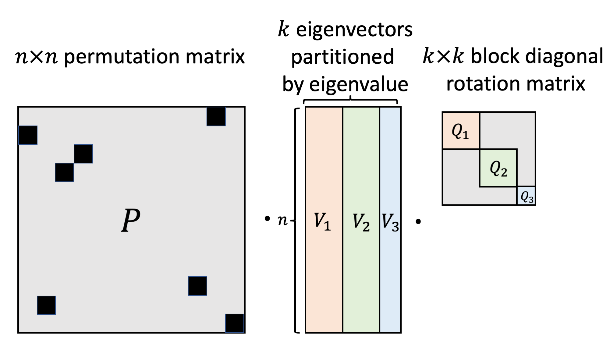
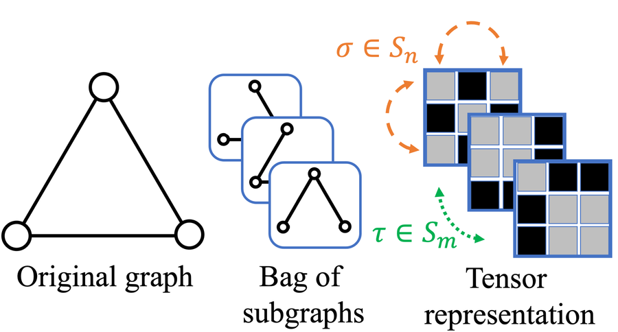
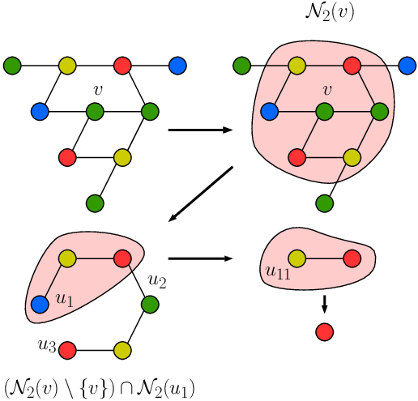
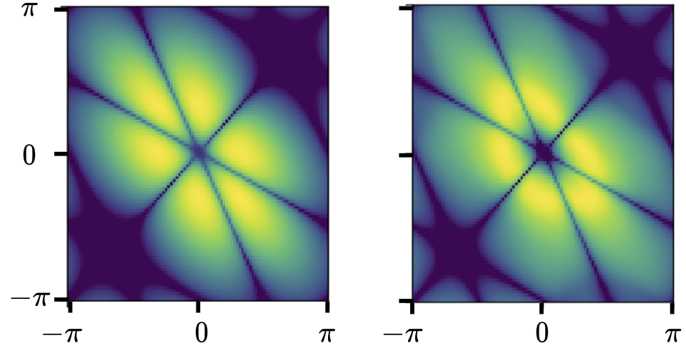
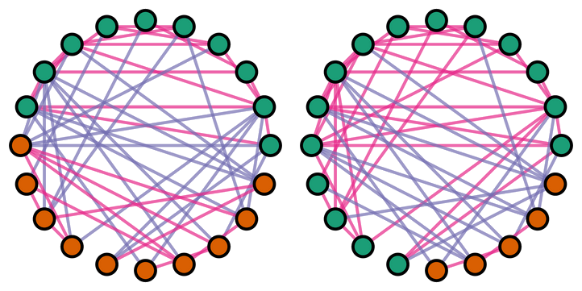
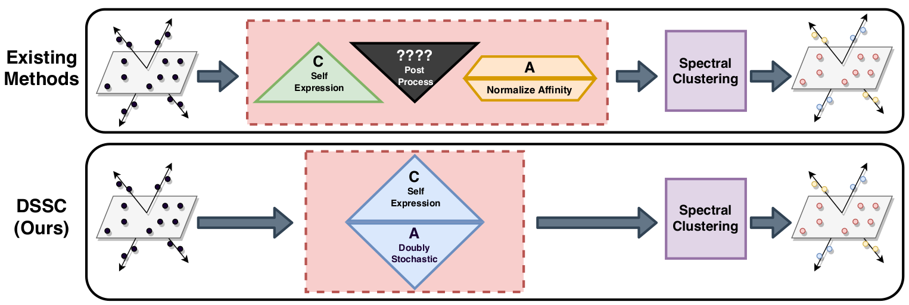
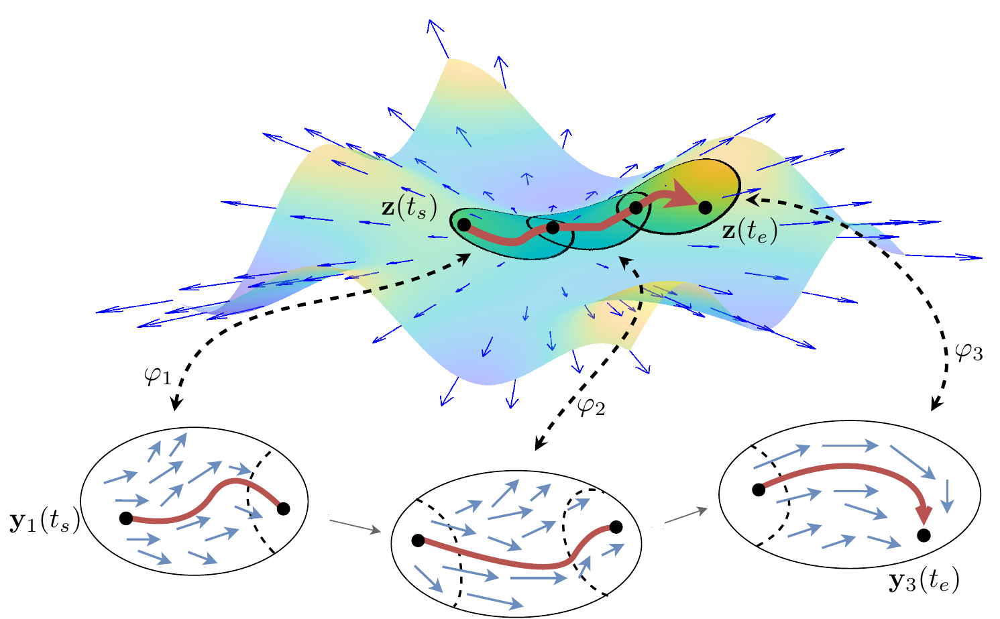
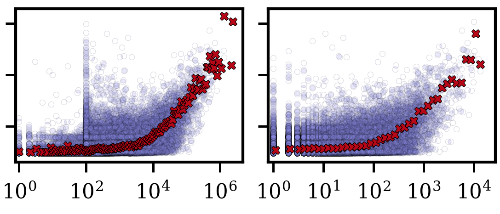
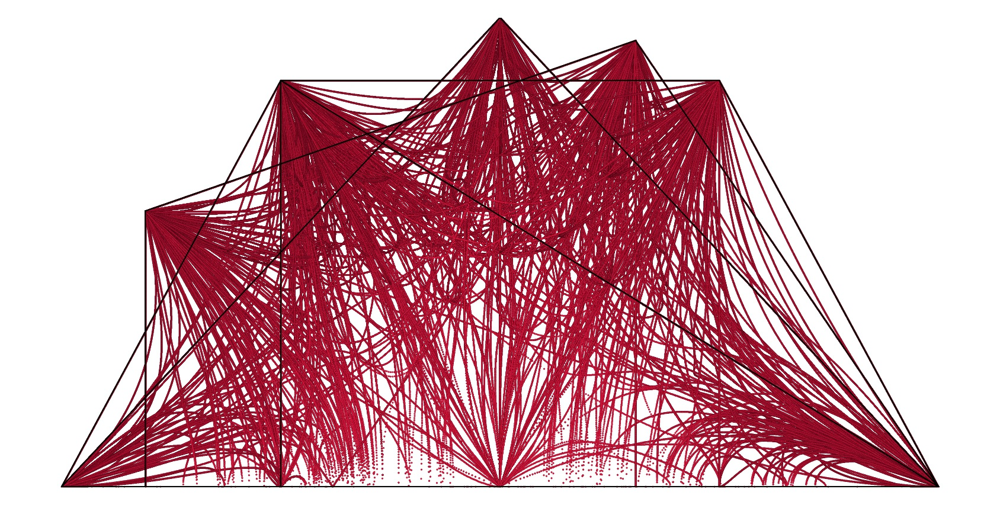

Research Papers
* Denotes equal contribution or alphabetical authorship.
|  |
Sign and Basis Invariant Networks for Spectral Graph Representation Learning Derek Lim*, Joshua Robinson*, Lingxiao Zhao, Tess Smidt, Suvrit Sra, Haggai Maron, Stefanie Jegelka arXiv:2202.13013 (2022) [arXiv] |
|  |
Equivariant Subgraph Aggregation Networks Beatrice Bevilacqua*, Fabrizio Frasca*, Derek Lim*, Balasubramaniam Srinivasan, Chen Cai, Gopinath Balamurugan, Michael Bronstein, Haggai Maron ICLR (2022), Spotlight (176 / 3391 total submissions) [pdf] [arXiv] [code] |
|  |
Counting Substructures with Higher-Order Graph Neural Networks: Possibility and Impossibility Results Behrooz Tahmasebi, Derek Lim, Stefanie Jegelka arXiv:2012.03174 (2021) [arXiv] |
|  |
Equivariant Manifold Flows Isay Katsman*, Aaron Lou*, Derek Lim*, Qingxuan Jiang*, Ser-Nam Lim, Christopher De Sa NeurIPS (2021) Also in ICML INNF Workshop (2021) [workshop pdf] [arXiv] |
|  |
Large Scale Learning on Non-Homophilous Graphs: New Benchmarks and Strong Simple Methods Derek Lim*, Felix Hohne*, Xiuyu Li*, Sijia Linda Huang, Vaishnavi Gupta, Omkar Bhalerao, Ser-Nam Lim NeurIPS (2021) Previous version: New Benchmarks for Learning on Non-Homophilous Graphs Workshop on Graph Learning Benchmarks (GLB 2021) at WWW (2021) [workshop arXiv] [workshop pdf] [workshop data/code] [arXiv] [data/code] |
|  |
Doubly Stochastic Subspace Clustering Derek Lim, René Vidal, Benjamin Haeffele arXiv:2011.14859 (2020) [arXiv] [code] |
|  |
Neural Manifold Ordinary Differential Equations Aaron Lou*, Derek Lim*, Isay Katsman*, Leo Huang*, Qingxuan Jiang, Ser-Nam Lim, and Christopher De Sa NeurIPS (2020) Also in ICML INNF Workshop, Spotlight (2020) [arXiv] [code] |
|  |
Expertise and Dynamics within Crowdsourced Musical Knowledge Curation: A Case Study of the Genius Platform Derek Lim, and Austin R. Benson International AAAI Conference on Web and Social Media, ICWSM (2021) [arXiv] [code] [Podcast] interview with Data Skeptic |
| \[HS(\rho_k(D_{2n})) = \Pi_{\frac{n}{\mathrm{gcd}(n,k)}} \cup \Pi_2\] \[HS(\rho(Q_8)) = \Pi_4\] |
Spectra of Convex Hulls of Matrix Groups Eric Jankowski*, Charles R. Johnson*, and Derek Lim* Linear Algebra and its Applications 593 (2020): 74-89 [arXiv] [doi] |
|  |
The Doubly Stochastic Single Eigenvalue Problem: A Computational Approach Amit Harlev*, Charles R. Johnson*, and Derek Lim* Experimental Mathematics (2020) [arXiv] [code] [doi] |